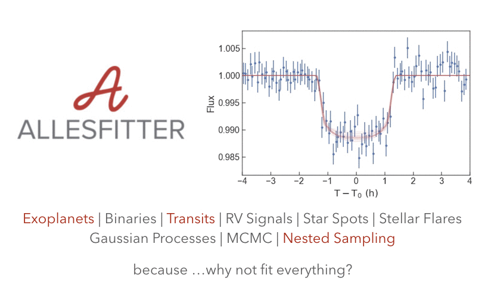

Welcome!¶
{kind=link}
[German-ish for everything-fitter]
allesfitter (Günther & Daylan, in prep.; GitHub) is a public and user-friendly astronomy software package for modeling photometric and RV data. It can accommodate multiple exoplanets, multi-star systems, star spots, stellar flares, and various noise models. A graphical user interface allows to define all input. Then, allesfitter automatically runs a nested sampling or MCMC fit, and produces ascii tables, latex tables, and plots. For all this, allesfitter constructs an inference framework that unites the versatile packages ellc (light curve and RV models; Maxted 2016), aflare (flare model; Davenport et al. 2014), dynesty (static and dynamic nested sampling; Speagle 2019), emcee (Markov Chain Monte Carlo sampling; Foreman-Mackey et al. 2013) and celerite (Gaussian Process models; Foreman-Mackey et al. 2017).
Contents¶
- Why allesfitter?
- Acknowledge & cite
- Installation
- Crash course
- Tutorials
- settings.csv
- General settings
- Fit performance settings
- MCMC settings
- Nested Sampling settings
- Limb darkening law per object and instrument
- Baseline settings per instrument
- Error settings per instrument
- Exposure times for interpolation
- Number of points for exposure interpolation
- Number of spots per object and instrument
- Number of flares (in total)
- TTVs
- Stellar grid per object and instrument
- Stellar shape per object and instrument
- Flux weighted RVs per object and instrument
- params.csv
- allesclass
- Performance & timing
- References